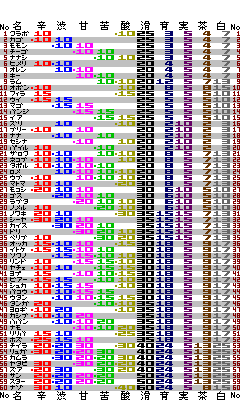

携帯用木の実データ表
※'07.1/21 ビアーの辛さの値を訂正。
ポケモンDSの木の実のデータを持ち運びに便利な携帯用画像として作成しました。
携帯へはケーブルで繋ぐとかメールに添付するとかして送ってください。
QVGAサイズ

QVGAというのは240×320px。要するに2007年現在最も主流の携帯画面サイズです。自分の携帯の画面サイズが分からなかったら多分これ。
QVGAに収まるサイズに作ってありますが、サイズの関係上横向きです。横にすると液晶が見にくい場合は次のワイドサイズを使ってください。
ワイドQVGAサイズ

ワイドQVGAは240×400pxの縦がちょっと長いやつ。縦が長いならワイドじゃなくてハイだと思うんだがどうでもいい。
一応ワイドQVGA用ですが、QVGAでも縦をスクロールすれば見られます。
上が20pxほど空いているのは、自分の携帯では常に時刻表示がかぶさる場所なので避けただけです。気に入らなければ適当に編集してください。編集はペイントでも簡単にできます。
どちらも何の変哲もないpng画像なので大抵の機種で見られると思います。
一応gifバージョンも。サイズ大きいけど。→[QVGA] [ワイドQVGA]
元のデータはかけるのページ内木の実大図鑑DSによります。表の見方の説明もこちらをご覧ください。